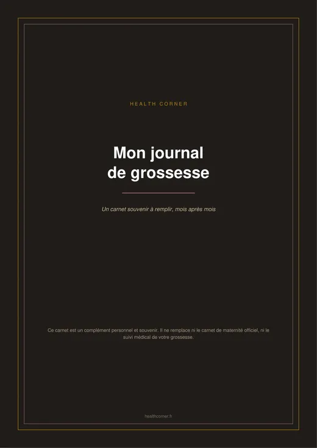
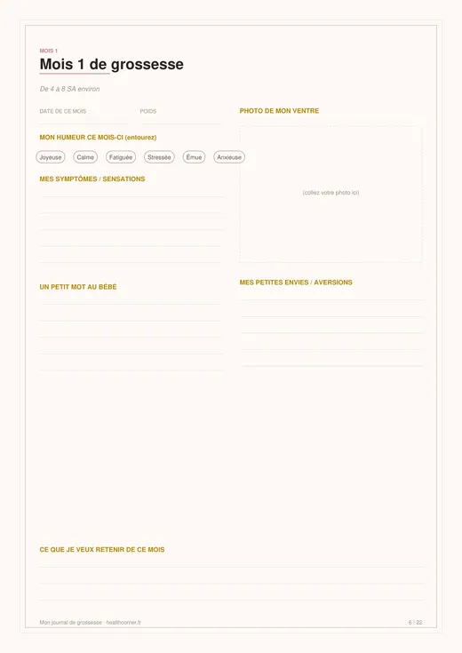
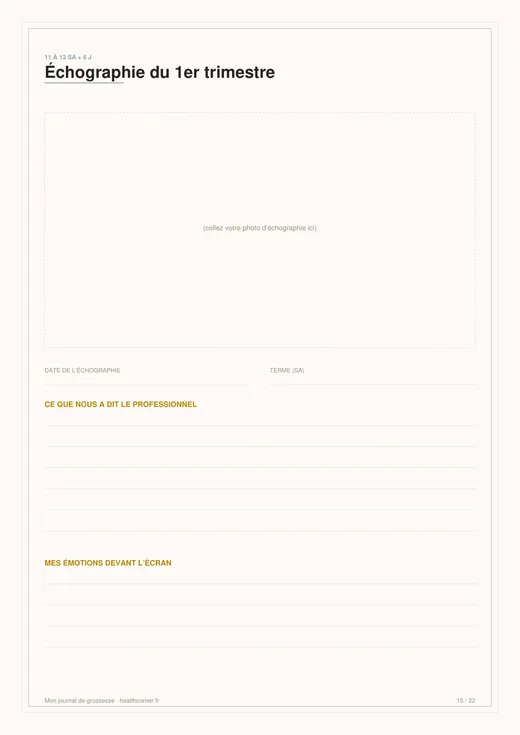
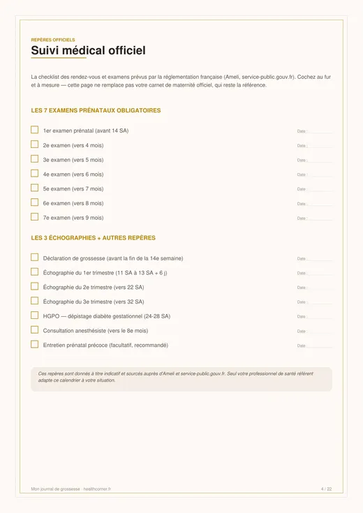
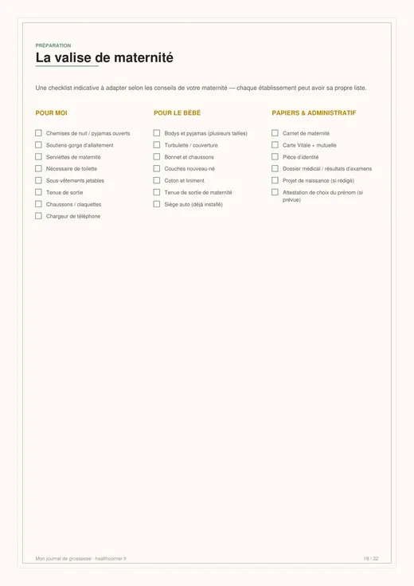
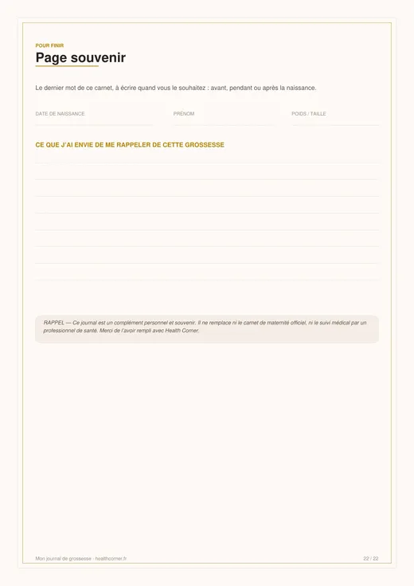

Avertissement
Ce journal est un complément personnel et souvenir, pensé par la rédaction de Health Corner. Il ne remplace en aucun cas le carnet de maternité officiel ni le suivi médical réalisé par votre sage-femme ou votre médecin.
Aperçu du carnet
Quelques pages du journal, pour vous donner un aperçu avant de l'imprimer.






Ce que contient le carnet
- Le test positif : date, ressenti, à qui l'avez-vous annoncé.
- Le suivi médical officiel : une checklist des 7 examens prénataux, des 3 échographies et de la déclaration de grossesse.
- Mes rendez-vous : un tableau libre pour noter vos rendez-vous au fil du suivi.
- 9 pages « un mois, une page » : humeur, poids, symptômes, cadre pour une photo de votre ventre, petit mot au bébé.
- 3 pages échographies : pour coller vos clichés et noter vos souvenirs.
- La valise de maternité, le projet de naissance et les prénoms envisagés.
- Une page « mon corps qui change » et une page souvenir finale.
Un complément, jamais un substitut
Ce carnet a une vocation purement souvenir et personnelle. Il ne remplace ni le carnet de maternité officiel (nouveau modèle CERFA 17595*01 depuis le 1er mars 2026), ni votre dossier médical, ni le suivi assuré par votre sage-femme ou votre médecin.
Aligné sur le calendrier officiel du suivi de grossesse en France
Les pages « suivi médical officiel » et « un mois, une page » de ce carnet reprennent les vrais jalons du suivi de grossesse français, tels que définis par l'Assurance Maladie et service-public.gouv.fr :
- 7 examens prénataux obligatoires, le premier avant 14 SA.
- 3 échographies : T1 vers 11-13 SA + 6 j, T2 vers 22 SA, T3 vers 32 SA.
- Déclaration de grossesse, à envoyer avant la fin de la 14e semaine.
- HGPO (dépistage du diabète gestationnel) entre 24 et 28 SA.
- Consultation avec l'anesthésiste, généralement au 8e mois.
Besoin de calculer vos propres dates ? Utilisez notre calculateur de terme en ligne (DPA, SA).
Télécharger le journal
Mon journal de grossesse — PDF A4
22 pages · gratuit · sans inscription
Guide d'impression : A4 ou A5 ?
Le fichier est conçu au format A4 pour une lisibilité optimale à l'impression. Si vous préférez un format carnet plus compact, la plupart des imprimantes et applications de lecture PDF proposent une option pour l'adapter :
- Format A4 classique : imprimez telle quelle, une page par feuille, recto simple ou recto-verso.
- Format A5 (mini-carnet) : dans les paramètres d'impression, choisissez « 2 pages par feuille » ou « brochure », puis pliez et reliez (agrafes, anneaux, ou reliure chez un imprimeur local).
- Reliure conseillée : pour un carnet qui dure toute la grossesse, une reliure spirale chez un copieur/imprimeur reste la solution la plus solide.
FAQ — Questions fréquentes
Ce journal remplace-t-il le carnet de maternité officiel ?
Puis-je imprimer ce journal en format A5 ?
Combien de pages contient ce carnet ?
Est-ce vraiment gratuit ?
Puis-je le remplir sur tablette plutôt qu'à la main ?
Sources et références
- Ameli — Suivi de la grossesse. ameli.fr
- service-public.gouv.fr — Examens médicaux obligatoires (fiche F963), déclaration de grossesse (fiche F968), carnet de maternité (fiche F17365).
- HAS / CNGOF — Recommandations de suivi de grossesse.
Ce carnet est un outil personnel et souvenir édité par Health Corner. Il ne fournit aucune interprétation médicale individualisée et ne remplace pas une consultation avec un professionnel de santé.